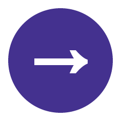

<!doctype html>
<html lang="ja">
<head>
<meta charset="UTF-8">
<link rel="stylesheet" href="top.css">
<link rel="stylesheet" href="font.css">
<link rel="stylesheet" href="body.css">
	<script type="text/javascript" src="menu.js"></script>
	<style>

</style>
<title>recruit_2019</title>
</head>

<body>
	<articlez>
		<header>
			<div id="page_top">
				<div class="top">
					<div class="top_blue"></div>
					<div class="top_purple"></div>
					<div class="top_red"></div>
					<div class="top_sentence">
						<div id="top_message">
						<h1 class="top_message">“人とは違うこと”をしよう。<br>４年間もその先も。<wbr></h1>
			  			<h2>Media Creative Supporter</h2>
						<br>
			  			<p>Media Creative Suppoter（通称 MCS）は関西大学<br>高槻キャンパス事務直属の映像制作ボランティア団体です。</p>
			  			<p class="about_us">About us</p>
						</div>
					</div>
					
					

<p><input type="image" src="menu.png" onclick="menu_open()" class="img_menu"></p>
<div  class="open">
	<span class="cls"></span>
	<span>
		<ul class="sub-menu">
			<li>
				<a href="＃message" title="Message">あいさつ</a>
			</li>
			<li>
				<a href="#about">MCSとは</a>
			</li>
			<li>
				<a href="#group">Projectとは</a>
			</li>
			<li>
				<a href="#project" title="group">局とは</a>
			</li>
			<li>
				<a href="#works" title="works">その他の活動</a>
			</li>
			<li>
				<a href="#how" title="contact">入団の仕方</a>
			</li>
			<li>
				<a href="https://mcs-kutc.com/index.html" title="home">ホームに戻る</a>
			</li>
		</ul>
	</span>
	<span class="cls"></span>

</div>
					</div>
		  		</div>
		</header>

		<section id="message" class="block">
			<div class="main_message">
			<h2>Message</h2>
			<p>代表あいさつ</p>
			</div>
		<div class="message_blue"></div>
		<div class="message_img"></div>
		<div class="message_red"></div>
		<div class="box">
			<div class="nakamura_message">
		<p>るいさんからの文章</p>
		</div>
	</div>
		</section>

<div class="line"></div>

		<section id="about" class="block">
					<div class="main_about">
			<h2>About</h2>
			<p>MCSについて</p>
		</div>
			<section id="group" class="block">
					<div class="description_mcs">
					<h1>MCSとは、</h1>
					<p>MCS（Media Creative Supporter）は関西大学公認の映像制作ボランティア団体*です。
＊サークルとは少し異なります（詳しくは入団説明会で）。
学生向けの校内番組の制作、長期休みを利用しての映画制作、キャンパス祭での活動
それらの広告活動などを行なっています。
</p>
			</div>
			<div class="groupactivity_img"></div>
				<div id="groupactivity_red">
					<p>Group<br>Activity</p>
				</div>
			</section>
			<section id="project" class="block">
				<div class="description">
				<h1>局とは、</h1>
				<p>MCSは<b>制作局、技術局、広報局</b>の3つの局から成ります。
まずはじめに、制作局は、番組の企画、脚本、に始まりスケジュール管理など制作の全体に関わります。想像力豊かな人や、リーダーシップが優れる人にオススメです。
次に技術局は、技術（機材）をメインに扱います。カメラ、音響、編集など映像制作の花形です。機械が苦手な人でも大丈夫です。
最後に広報局は広報活動としてポスターや、このウェブの制作を主にしています。
多方に興味がある人なんかにオススメです。
</p>
			</div>
			<div class="project_img"></div>
			<div id="project_blue">
				<p>project</p>
			</div>
			</section>
			<section id="works" class="block">
				<div class="description">
				<h1>Projectとは、</h1>
				<p>我が、MCSにはプロジェクトというものがあります。
プロジェクトは、上記にある局と関係なく活動できます。
現在プロジェクトは2つあり、一つが、<b><i>カイザース</i></b>という活動で関西大学体育会の試合の撮影・放送をしています。もう一つは<b><i>
	MCStube</i></b>と言われる活動で生放送などYoutubeでの動画投稿です。
</p>
			</div>
			<div class="works_img"></div>
			<div id="works_purple">
				<p>works</p>
			</div>
			</section>
			<section id="other" class="block">
				<div class="description">
				<h1>その他に活動、</h1>
				<p>MCSは上記の活動以外にも、夏の合宿、体育祭、文化祭、統一祭での出店など、映像制作以外にも楽しく貴重な体験ができます。</p>
			</div>
			</section>
		</section>

		<div class="line"></div>

		<section id="how" class="block">
			<div align="center">
			<p>How to enter</p>
			<p>MCSへの入り方</p>
		</div>
			<section id="guidance" class="block">
				<div class="guidance_img"></div>
				<div class="guidance_red"></div>
				<p class="guidance_01">01.Guidance</p>
				<h3>新入生ガイダンス<br>(スタジオ見学)</h3>
				<p class="how_right">日時：4/5(Fri) 15:00~18:00<br>
					場所：C棟１階スタジオ<br><br>

					履修決めちゃいました？？履修相談もおこなっています。初めての履修登録迷っていたら是非来てください。
				</p>
				<p class="guidance">Guidance</p>
			</section>
			<section id="party" class="block">
				<div class="party_img"></div>
				<div class="party_blue"></div>
				<p class="party_02">02.party</p>
				<h4>お菓子パーティ</h4>
				<p class="how_left">日時：4/8(Mon) 16:00~20:00<br>
					場所：未定<br><br>
				先輩と仲良くなるチャンス！！お菓子たくさん用意してま〜〜す！<br>
			みんなで和気藹々とおしゃべりしましょう！！！</p>
			</section>
			<section id="briefing" class="block">
				<div class="briefing_img"></div>
				<div class="briefing_purple"></div>
				<p class="briefing_03">03.Briefing</p>
				<h5>入団説明会＆<br>新入生歓迎お食事会</h5>
				<p class="how_right">日時：4/12(Fri) 18:00~21:30<br>
					場所：C棟１階スタジオ<br><br>
				説明会は30分くらいで終わります。MCSについてリーダーからの活動についての説明と入団方法の説明！！<br>
				それが終わったらみんなが楽しみお食事会いだ〜〜♫
			安くで食べれるから来てね！！<br>
		＊参加には1000円かかるので持参ください</p>
			</section>
			<section id="submit" class="block">
				<div class="submit_img"></div>
				<div class="submit_orange"></div>
				<p class="submit_04">04.Submit</p>
				<h6>入団届け提出</h6>
				<p class="how_left">日時：4/19(Fri) ~18:00<br>
				入団届けに名前を書いて出すただそれだけ。<br>
			君もこれで団員だ！！</p>
			</section>
		</div>
	</div>
		</section>

		<footer>
			<a href="#page_top"><div class="up"></div></a>
		</footer>
	</articlez>
</body>
</html>
